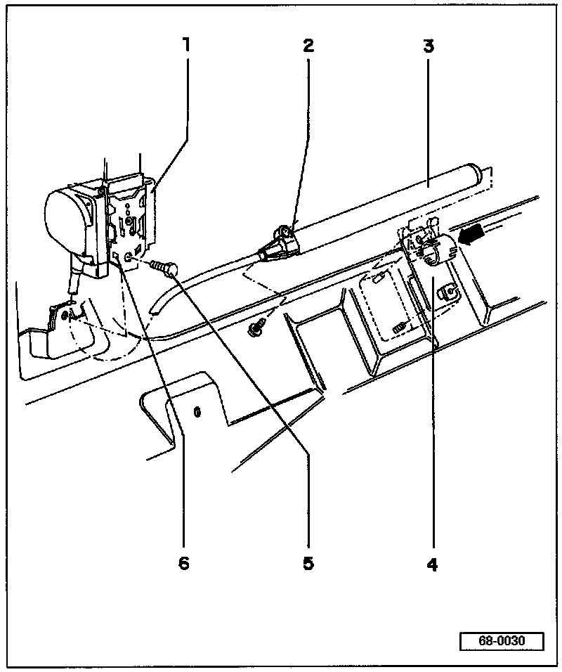

4 Door
WARNING: ALWAYS follow the prescribed work sequence for removing or installing the belt reel.
1 - Belt reel
2 - Lock nut
- Torque to: 23 Nm (17 ft lb)
3 - Tensioning unit
4 - Cable channel/Mounting for tensioning unit
5 - Hex bolt
- Torque to: 40 Nm (30 ft lb)
6 - Retaining slots
- Engage with mounting lugs to determine belt reel mounting position
Removing:
- Remove upper and lower B-pillar trim, and sill plate trim.
- Loosen lock-nut -2-, this detaches tensioning unit -3- and makes it inactive.
- Remove belt reel -1-.
- Pull tensioning unit -2-out of guide (arrow) in bracket -4-.
Installation:
- Installation is carried out in the reverse order of removal.